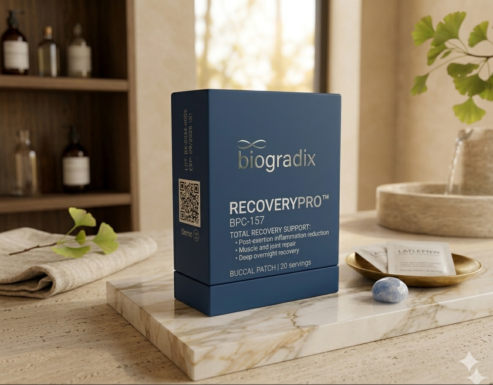

El BPC-157 es un pentadecapéptido derivado de proteínas gástricas. Presente de forma natural en el jugo gástrico, es el péptido de reparación natural del organismo — activa rutas de recuperación que permanecen dormidas en el cuerpo adulto.

Absorción sublingual de precisión — cinco pasos desde la gota hasta la célula.
Reduce el DOMS (dolor muscular de aparición tardía) hasta en un 40–50%. Acelera la eliminación de metabolitos de desecho y la resíntesis de glucógeno, permitiendo entrenamientos más frecuentes e intensos.
Estimula la proliferación de fibroblastos y la síntesis de colágeno en tendones y ligamentos. Activa la angiogénesis local, mejorando el flujo sanguíneo hacia tejidos avasculares que naturalmente se reparan con lentitud.
BPC-157 tiene efectos gastroprotectores comprobados. Protege la mucosa gástrica, reduce la inflamación intestinal y mejora la permeabilidad del intestino delgado, optimizando la absorción de nutrientes.
Modula vías proinflamatorias (COX-2, TNF-α, IL-6) sin los efectos secundarios de los AINEs convencionales. Resolución de inflamación crónica de baja intensidad asociada al sobreentrenamiento.
Cada lote de RecoveryPro se somete a análisis de pureza por HPLC, pruebas de endotoxinas LAL y verificación de identidad molecular. Producción bajo estándares GMP farmacéutico.
Responde 5 preguntas y recibe una recomendación personalizada basada en tus objetivos.